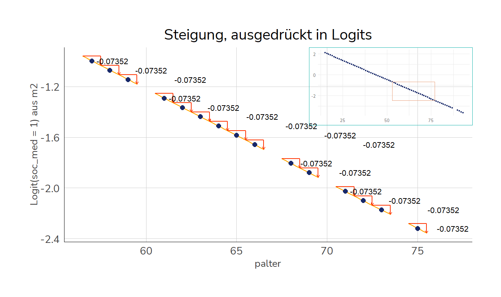
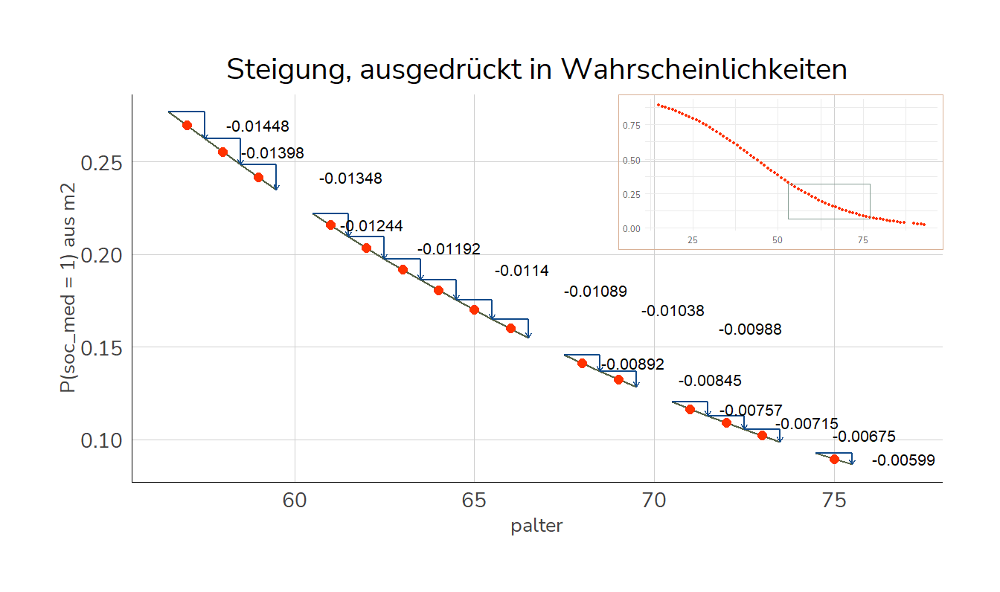

In diesem Kapitel widmen wir uns dem Fall einer binären abhängigen Variable/Dummyvariable. Für solche Fälle sind logistische Regressionsmodelle gebräuchlich, die sich in Ihrer Anwendung etwas von ‘normalen’, linearen Regressionsmodellen unterscheiden. Kern dieses Unterschieds ist die Link-Funktion, welche die Koeffizienten etwas schwerer interpretierbar macht - daher haben sich sog. marginal effects als Darstellungsform für Ergebnisse logistischer Regressionen etabliert. In R steht uns dafür das Paket {marginaleffects}, welches sich in der Anwendung sehr dem margins-Befehl in Stata ähnelt.
Bisher hatten wir immer Regressionsmodelle betrachtet, die eine metrisch skalierte abhängige Variable hatten.1 Aber gerade Individualmerkmale sind nur selten metrisch skaliert, z.B. Erwerbstatus, Familienstand, Geschlecht, Elternstand, … Ein lineares OLS-Regressionsmodell wie wir es bisher kennen gelernt haben, hilft uns hier nicht weiter. Schauen wir uns beispielsweise die Frage nach der Social Media-Nutzung der Befragten an (PSM0100)[^3] :
Nutzung von sozialen Netzwerken?
Die 1 steht dabei jeweils für “ja”, die 2 für “nein”. Wir verändern die Codierung aber so, dass die “nein”-Antworten mit 0 versehen werden. Die neue Variable nennen wir soc_med.
In R können wir ein solches Modell mit glm() und der Option family="binomial" berechnen:2
m2 <-glm(soc_med ~ palter, family ="binomial", data = pend10)summary(m2)
Call:
glm(formula = soc_med ~ palter, family = "binomial", data = pend10)
Deviance Residuals:
Min 1Q Median 3Q Max
-2.1014 -0.9246 -0.4485 0.8999 2.4047
Coefficients:
Estimate Std. Error z value Pr(>|z|)
(Intercept) 3.194321 0.107660 29.67 <2e-16 ***
palter -0.073518 0.002315 -31.75 <2e-16 ***
---
Signif. codes: 0 '***' 0.001 '**' 0.01 '*' 0.05 '.' 0.1 ' ' 1
(Dispersion parameter for binomial family taken to be 1)
Null deviance: 7557.2 on 5461 degrees of freedom
Residual deviance: 6217.5 on 5460 degrees of freedom
(22962 Beobachtungen als fehlend gelöscht)
AIC: 6221.5
Number of Fisher Scoring iterations: 3
Die Interpretation der \(\beta\) aus einem logistischen Regressionsmodell bezieht sich also auf die Logits (die logarithmierten Odds):
Es besteht ein am 0,001-Niveau signifikanter Zusammenhang zwischen dem Alter und der Wahrscheinlichkeit, Social Media zu verwenden. Mit einem um 1 Jahr Lebensalter Einkommen gehen um 0.073518 niedrigere Logits einher, dass die Befragten Social Media zu verwenden.
10.2 average marginal effects
Logits sind aber sehr unhandlich - wie verändert sich jetzt aber die Wahrscheinlichkeit für \(\texttt{soc\_med} = 1\) mit palter? Hier haben wir das Problem, dass die Ableitung der “rücktransformierten Funktion” nicht so einfach ist wie im Fall der OLS. Verändern wir nämlich auch die Regressionsgleichung von oben3 mit exp() und \(p=\frac{Odds}{1+Odds}\), so landen wir bei
Diesen Ausdruck müssten wir nach palter ableiten, um eine Antwort zu bekommen um wieviel sich die vorhergesagte Wahrscheinlichkeit für \(\texttt{soc\_med} = 1\) mit einem um einen Jahr höheren Befragtenalter verändert. Durch die Tatsache dass palter hier im Exponenten der e-Funktion und sowohl im Dividenden als auch Divisor (“oben und unten”) steht, wird die Ableitung hier aber deutlich komplizierter als das in den bisherigen lm()-Modellen der Fall war. Für uns ist an dieser Stelle aber nur wichtig, dass wir für die Berechnung der Veränderung der vorhergesagten Wahrscheinlichkeiten die sog. marginalen Effekte aus dem Paket {marginaleffects} brauchen. Darin findet sich der Befehl avg_slopes(), welcher uns erlaubt ein \(\beta\) zwischen dem Einkommen und der Wahrscheinlichkeit für \(\texttt{soc\_med} = 1\) zu berechnen. Dieses wird auch als average marginal effect bezeichnet, da sie den durchschnittlichen marginalen Effekt der betrachteten unabhängigen Variable auf die abhängige Variable wiedergeben.
install.packages("marginaleffects") # nur einmal nötiglibrary(marginaleffects)
Mit einem um 1 Jahr höheren Lebensalter geht im Durchschnitt eine um 0.01419 (1.41891 Prozentpunkte) geringere Wahrscheinlichkeit einher, Social Media zu verwenden.
10.3 Predictions
Alternativ können die Ergebnisse aus log. Regressionen auch als vorhergesagte Werte dargestellt werden. Vorhergesagte Werte können wir mit predictions() aus {marginaleffects} erstellen:
10.5 Fixed effects logistische Regression mit {fixest}
Mit feglm() lassen sich auch logistische FE-Modelle schätzen:
library(fixest)feglm(soc_med ~ palter |pnr, data = pend10, family = binomial)
NOTES: 22,962 observations removed because of NA values (LHS: 22,962, RHS: 60).
2,284 fixed-effects (4,563 observations) removed because of only 0 (or only 1) outcomes.
fe_log1 <-feglm(soc_med ~ palter |pnr, data = pend10, family = binomial)
NOTES: 22,962 observations removed because of NA values (LHS: 22,962, RHS: 60).
2,284 fixed-effects (4,563 observations) removed because of only 0 (or only 1) outcomes.
Erstellen Sie ein logistisches Regressionsmodell mit PAS0400 basierend auf der Frage
Nicht-Erwerbstaetige: Stellensuche in den letzten vier Wochen?
als abhängiger Variable (1 = ja, 0 = nein.) Verwenden Sie das Alter palter als unabhängige Variable.
Bonusübung: Stellen Sie die * adjusted predictions* in einem Plot auf Basis der Predictions dar.
Berechnen Sie die AME mit marginaleffects.
10.7 Anhang: Hintergrund zu log. Regression & average marginal effects
Wenn wir uns fragen, ob sich Befragte mit höherem Einkommen seltener im Freien arbeiten, hilft uns die OLS-Vorgehensweise nicht so richtig weiter. Die “Punktewolke” zur Optimierung der Abweichung zwischen tatsächlichen und vorhergesagten Werten (Residuen) sieht hier anders aus als bisher:
Um trotzdem ein Regressionsmodell zu berechnen, könnten wir die abhängige Variable uminterpretieren. \(\hat{y}\) wird dann nicht mehr dichotom, sondern als metrische Wahrscheinlichkeit interpretiert, dass der Befragte mehr als die Hälfte der Arbeitszeit im Freien arbeitet (also die Wahrscheinlichkeit für soc_med = 1). Das können wir dann wie gehabt in eine Regressionsgleichung aufnehmen, zB. mit dem Einkommen als unabhängiger Variable:
Allerdings führt das zwangsläufig zu Verstößen gegen die Annahmen bzgl. der Residuen - die Fehler werden immer heteroskedastisch und nicht normalverteilt sein. Zudem wird es vorhergesagte Werte geben, die nicht sinnvoll interpretiert werden können, weil es mit 0 und 1 Grenzen gibt, jenseits derer Wahrscheinlichkeiten nicht existieren (zB gibt es keine negativen Wahrscheinlichkeiten).
Code
ggplot(pend10, aes(x = palter, y = soc_med)) +geom_point(color ="#172869", size = .75) +geom_smooth(method ="lm", color =lacroix_palette("PeachPear",6)[2],se = F ) +labs(y ="P(soc_med = 1)", x ="Einkommen (in 100 EUR)",title ="lineares Wahrscheinlichkeitsmodell")
Um diese Probleme zu umgehen, sind für dichotome abhängige Variablen logistische Regressionsmodelle ein sehr verbreitetes Vorgehen. Dafür werden neben dem bereits angesprochenen Schritt der Betrachtung von \(\hat{y}\) als Wahrscheinlichkeit zwei weitere Transformationen der abhängigen Variable vorgenommen:
Odds statt Wahrscheinlichkeiten: Um die obere Grenze des Wertebereichs der abhängigen Variablen auf \(+\infty\) auszudehnen, werden statt Wahrscheinlichkeiten Odds betrachtet. Odds sind definiert als der Quotient aus Wahrscheinlichkeit und der Gegenwahrscheinlichkeit für ein gegebenes Ereignis. In unserem Beispiel sind also die Odds dafür, dass eine Befragter angibt, social media zu nutzen:
Die Odds gehen gegen 0, je unwahrscheinlicher das betrachtete Ereignis ist. Für sehr wahrscheinliche Ereignisse nehmen die Odds Werte an, die gegen \(+\infty\) gehen, das Verhältnis zwischen Dividend (“Zähler”) und Divisor (“Nenner”) wird immer größer.
Logits statt Odds: Damit bleibt aber noch das Problem der negativen Werte bestehen: Auch Odds sind nur für [0;\(+\infty\)] definiert. Um auch den negativen Wertebereich sinnvoll interpretierbar zu machen, werden die Odds logarithmiert, wir erhalten die sogenannten Logits:
Zunächst stellt sich die Frage, was Logits denn bedeuten. Eigentlich möchten wir ja Wahrscheinlichkeiten im Wertebereich zwischen 0 und 1 (bzw. 0% und 100%) als Interpretationseinheit haben. Die Berechnung eines vorhergesagten Werts für einen Befragten mit einem Alter von 25 Jahren (palter=25) ergibt durch einsetzen bzw. predict() natürlich auch die Logits:
summary(m2)$coefficients
Estimate Std. Error z value Pr(>|z|)
(Intercept) 3.1943207 0.107659911 29.67048 1.846515e-193
palter -0.0735175 0.002315329 -31.75251 2.931805e-221
3.1943207+-0.0735175*25
[1] 1.356383
predict(m2, data.frame(palter =25))
1
1.356383
Befragte mit einem Alter von 25 Jahren haben dem Modell zu Folge Logits von 1.35638, social media zu verwenden.
Um an die Wahrscheinlichkeit für soc_med = 1 zu bekommen, müssen wir die Transformationsschritte sozusagen “rückabwickeln”! Dafür müssen wir zunächst mit exp den ln() vor den Odds heraus rechnen und können dann durch die die Formel \(p=\frac{Odds}{1+Odds}\) die Wahrscheinlichkeit aus den odds berechnen:
exp(logits)/(1+exp(logits)) # beide Schritte auf einmal
1
0.7951712
Die Wahrscheinlichkeit, dass ein Befragter mit einem Einkommen von 1000 Euro angibt, mehr als die Hälfte Ihrer Arbeitszeit im Freien zu arbeiten, liegt also unserem Modell zu Folge bei 92.123%.
Mit der Option type="response" können wir das auch mit predict() direkt berechnen:
Wie verändern sich dann die vorhergesagten Werte, wenn wir palter um eine Einheit (also 100€) erhöhen? Die Logits verändern sich pro Einheit palter natürlich genau um \(\hat\beta1\), also hier -0.07352. Um sich die Steigung an einigen Werten anzusehen, berechnen wir jeweils die Abstände der vorhergesagten Werte für \(x-0.5\) und \(x+0.5\):
Um die Werte jeweils mit dem eingesetzten Wert zu beschriften, stellen wir den Wert mit ""=voran:
Die Differenzen sind immer gleich - entsprechend der Interpretation gehen mit einem um eine Einheit höheren palter um 0.07352 höhere Logits einher, dass die Befragten Social Media verwenden:
Steigung bei palter = 20: 1.68721 \(-\) 1.76073 = -0.07352
Steigung bei palter = 31: 0.87852 \(-\) 0.95204 = -0.07352
Steigung bei palter = 45: -0.88590 \(-\) -0.81238 = -0.07352
Wenn wir uns diese Schritte aber jeweils für die vorhergesagten Wahrscheinlichkeiten ansehen, sieht das aber anders aus:
predict(m2, data.frame(palter=c("19.5"=19.5,"20.5"=20.5,"30.5"=30.5,"31.5"=31.5,"54.5"=54.5,"55.5"=55.5)), type ="response")
Hier werden die Differenzen mit zunehmendem palter immer kleiner:
Steigung bei palter = 20: 0.84386 \(-\) 0.85330 = -0.00944
Steigung bei palter = 31: 0.70652 \(-\) 0.72152 = -0.01501
Steigung bei palter = 55: 0.29196 \(-\) 0.30738 = -0.01543


Diese Steigungen werden für alle Beobachtungen aus dem zu Grunde liegenden Datensatz aufsummiert und dann der Durchschnitt gebildet (\(\rightarrow\)average marginal effects)
10.8 Links
Die Seite zu {marginaleffects} bietet sehr ausführliche und anschauliche Beispiele zu den verschiedenen Varianten marginaler Effekte
family="binomial" ist dabei entscheidend: glm(soc_med ~ palter, data = pend10) oder glm(soc_med ~ palter, family = gaussian(), data = pend10) ist gleichbedeutend mit lm(soc_med ~ palter, data = pend10): es wird ein lineares OLS-Modell berechnet.↩︎